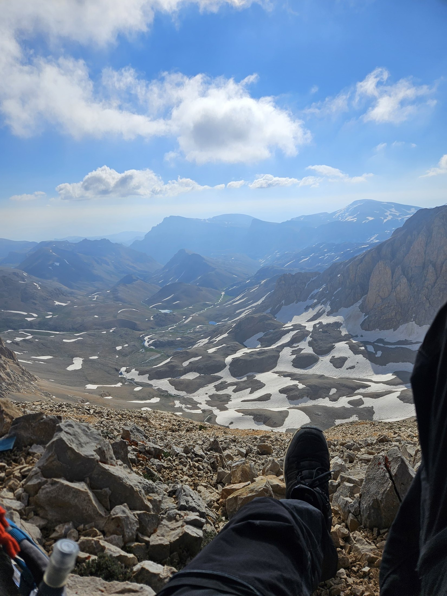
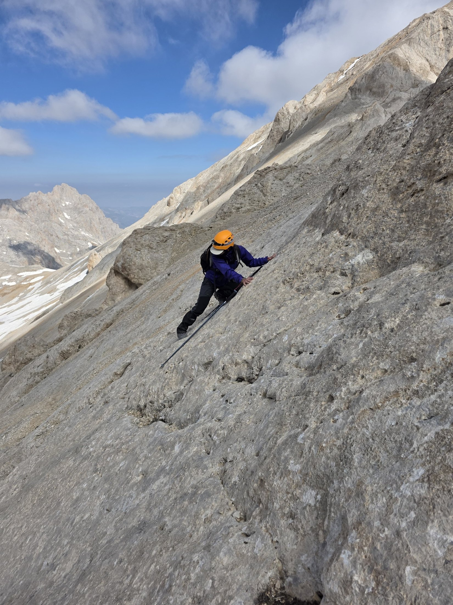

Yıldızbaşı · 3.454 m


Yıldızbatı · 3.300 m


ACTIVITY INFORMATION
| Name of activity: | 5 Graduates 3 Summits and Skinny Dip |
|---|---|
| Date: | 03–07 July / 2026 |
| Locationi: | Aladağlar |
| Type: | Summit |
| Route: | Esenler–Ataşehir/Dudullu–Niğde Bus Station–Campsite |
| Distance covered: | 7.4 km (approximately) |
| Elevation gained: | 475 m (but with many descents and ascents) |
| Participants: | Hüseyin Fikret Değirmencioğlu, İlayda Efsane Algın, Alp Dereli, Arca Köybaşıoğlu, Beril Kiyanfer |
EQUIPMENT INFORMATION
| Camping equipment: | 3-person and 2-person winter tents (2 in total), kettle (1), pot and cooking set (1), gas canister (2), sleeping mat (5), sleeping bag (5), inflatable pillow (3) |
|---|---|
| Technical equipment: | Gaiters (5), headlamp (5), helmet (5), Garmin watch (1), trekking pole (5) |
| Personal equipment: | Care products, pocket knife, first aid kit, lighter, wet and dry wipes, sunscreen, sunglasses |
| Other equipment: | Power bank |
| Food: | 3 packs of pasta, 2 packs of kavurma, 2 packs of bulgur, 6 cans of turkey, peppers, nuts and plenty of snacks, water, tea, coffee, 10 packs of instant soup |
ROUTE INFORMATION
| Campsite: | Oba Locationi |
|---|---|
| Water source: | Campsitenda akarsu var ama gidilmeden önce kontrol edilmeli. Yılın bazı zamanları kuruyor. |
| Hazards: | At the time of the activity, the snow had not melted and the trails were closed. The snow created slippery ground both while climbing and descending. Care should be taken while climbing; the rocks are extremely rotten. |
| Terrain: | Rubble, gravelled surface, snow, scree |
| Difficulty derecesi: | Hard |
| Map: | Wikiloc | Aladağlar. Oba Yeri – Yıldızbatı summit – Yıldızbaşı summit – Akçay Pass – Bozkurt Tepe summit – Çağalınbaşı summit route – Demirkazık, Niğde (Turkey) – GPS track |
| GPS information: | - |
| Target time: | 10 hours |
| Time taken: | 11 hours |
PROGRAM
| Day weather: | Day weather: | Day weather: | |
| Morning | - | Sunny (zirveye doğru rüzgârlı çok) | Rainy |
| Noon | Sunny | Sunny | Sunny |
| Evening | Clear | Clear | - |
TRANSPORTATION INFORMATION:
03 Temmuz Cuma Dudullu kalkış saati 21.00 olan otobüs ile harekete geçtik. Gebze Otogarında araç bozulduğu için (Aydoğanlar) en az 2 saat duraklama yaşadık. Morning 9 gibi Niğde otogarına vardık. Fikret’in pickupı ile otogardan doğrudan Çamardı köyüne yaklaşık 40 dakikada rahatça gidebildik. Oradan Ulvi abi bizi 30 dakika gibi bir sürede belirlediğimiz yere bıraktı. Yaklaşık 3 saatlik bir yürüyüşün ardından kamp alanımıza vardık.
We began our return on 06 July, again on foot. After a 2.15-hour walk, Ulvi abi picked us up from our meeting point at exactly 14:00 and brought us to the village (at approximately 15:00). We got back into Fikret’s pickup and first stopped at his village (approximately 16:00). From there, we went into the city and ate. Finally, we comfortably caught our buses at 21:00 and 20:45.
Activity Flow:
Campsitena varınca önce çadır kuracak yeri belirledik. Çadır kurup yerleşince de sularımızı tazeleyip yemek yedik. Yatmadan önce yarınki zirveye hazırlandık. Yatmadan önce yemek yediğimiz için de kahvaltıda vakit kaybetmedik ve sabah midemizi şişirmedik. Büyük olan çadırda muhabbet edip moral tazeledik ve güneş batarken uyuduk.
On the morning of the second day, we woke at 4:00. Because we had prepared the day before, we were able to get dressed, take our bags, and set off directly. Since Efsane could not find her pole, we lost some time looking for it (We had actually seen it, but because another man was next to it, we did not realise it was ours. We noticed this when we returned). For that reason, we used 1 pole in turns and it caused no problem (Alp–Efsane / The bag was shared anyway. Whoever carried the bag also took the pole). The climb was quite steep, and because our morale was high, we quickly climbed both summits. We were 1.15 hours ahead of the plan. There was a lot of wind while climbing to the first summit, and the first summit was cold. Because the gravel and scree slid a great deal on the steep ground, using the slab was much more sensible and less tiring (the slabs here were less risky compared with the others). Climbing from the first summit to the second summit was easier, and our morale was very high. We had to use the slab and climb without equipment, but overall it was not tiring. Care was required only in some places (the rocks were rotten while climbing, the side was covered with snow, and there was a cliff behind us while using the slab). Because we reached the summit early, we took a long break and restored our morale. After a long break (approximately 1 hour), we continued to the second part of the route.
In the second half of the route, we had to descend into the valley. Both the descent and ascent were very steep. We could not find the trail. If there was one, it was covered by the snow. We had to traverse both while descending and climbing, and some places were very risky. While descending, especially toward the middle of the valley, because we were traversing, it was necessary to proceed carefully without losing elevation instead of descending rapidly through the scree. In addition, while traversing, we had to cross an extremely steep slab with a cliff behind it. Extra care is required there. After passing that section, we began to gain elevation again. Because there was no trail, the ascent was very tiring. We had to climb an extremely steep place over gravel; there was either no slab or it was insufficient. When we reached the 3rd summit (BMB), Efsane went ahead to make sure the route was safe. However, the rocks at the place we needed to climb in order to continue were extremely rotten. In addition, there was a cliff behind them, and the remaining members of the team had backpacks and poles. For this reason, we decided to take a break without passing that point and did not continue (the place marked as the turnaround on the map). During our break at the 3rd summit, we ate the food we had prepared. Because the wind was very strong, we became cold and could not take a long break.
Then we began our return. Because the lake on our route (Dipsiz Göl) was visible, we began the descent with high morale. In the first parts of the descent, we carefully lost elevation using the gravel. However, when we reached a certain point in the descent, the ground ahead became extremely steep. In addition to all this, because the snow had not melted, we could not move directly downward. Instead, we decided to descend to the point closest to the mountain plain below us and slide down the snow. Even so, we had to act very carefully while descending to the point where we could slide. To reach places where the snow started lower down, we had to traverse again. Because snow blocked us during the traverse, it made our route more difficult. We either had to climb again and go around above it, or compress the snow thoroughly and cross very slowly at its narrowest point. Despite all our care, we were constantly at risk of slipping and falling because of the snow or gravel. Since this was after the summit, most of our awareness was also shut down.
While trying to cross another patch of snow, our team split into two. Efsane and Arca crossed from the lower part of the snow; Alp, Fikret, and Beril crossed from the upper part and gathered higher up. The lower group descended more quickly (the descent was still quite steep and required care), reached the snow earlier, and slid from a safe elevation. The other group made a longer walk. They moved farther away to where the snow was closer to the plain and slid down from there. Because the snow was very thick, there was no problem while sliding. If possible, the snow thickness should be checked before sliding.
The plain was quite flat. Some parts were still very steep and completely covered with snow. It caused no problems on the flat sections; on the slopes, we again identified safe places and reached the lake by sliding. Because rocks remained above the snow in some places, the place to slide must be chosen carefully. After this enjoyable descent, the sun came out and the surroundings warmed up. We took our final break by the lake. Those who wanted to entered the lake, while the others sat beside it and rested. After a 30-minute walk from the lake, we returned to the campsite.
Campsitenda yemek yedik, DUO oynadık ve uzunca hem dinlendik hem de takıldık. Bu uzun günün ardından ekibe iyi geldi. Yine gün batmadan yarın için hazırlandık, etrafı topladık ve gün batarken de uyuduk.
The next day, we were going to go to the other summit, but we did not go because nobody could get up. We woke at around 10:00, had a small breakfast (with instant soups), and packed up the camp. Then we began our final walk. We reached the place agreed with Ulvi abi quite comfortably and quickly (we walked approximately 2.15 hours and met at exactly the agreed time, 14:00), and in this way we left the mountain.
DETAILS:
At the Campsite:
- Water is filled directly from the stream. Before going, it should be checked whether it has dried up.
- Campsite oldukça sakin ve güzeldi herhangi bir büyük sıkıntısı yoktu.
- Campsite yüksekte olduğu için dağcı hastalığı görülebilir.
- Internet reception (except Vodafone) is available on the nearby high points.
During the Activity:
- There is internet reception at the summit (Yıldızbaşı).
- We navigated using both the watch and the phone (the watch was acting up).
- While descending from the summit, the trails—if there were any—were covered because of the snow. This lengthened our route considerably and created risky moments.
- We could not find the pole, but it did not cause a problem (the places where belongings are left should not be forgotten).
- An extra T-shirt is necessary (do not forget); it should be changed from time to time so that sweat does not remain on us (the wind can blow strongly; I (Alp) changed mine at the first summit).
- At times along the route, we had to pass through places that were very steep and had cliffs.
- On the return route, the team split into two, but neither group left the other’s sight.
Return:
- Campsitendan inerken suyu tam doldurmaya gerek yok. Yol üstünde çeşmeler var.
PHOTOS